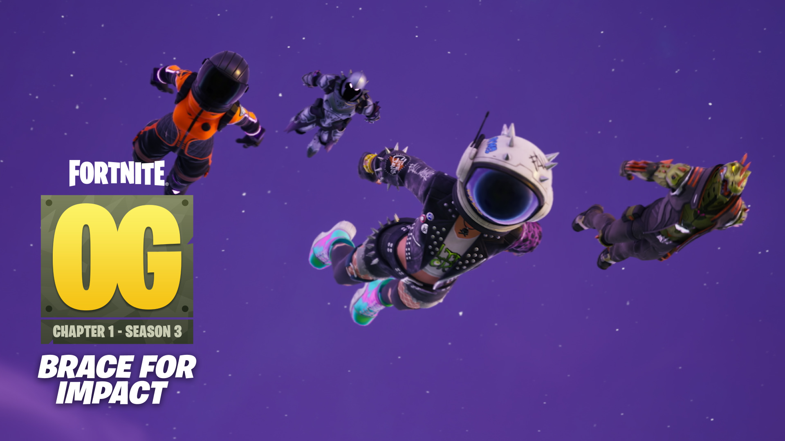
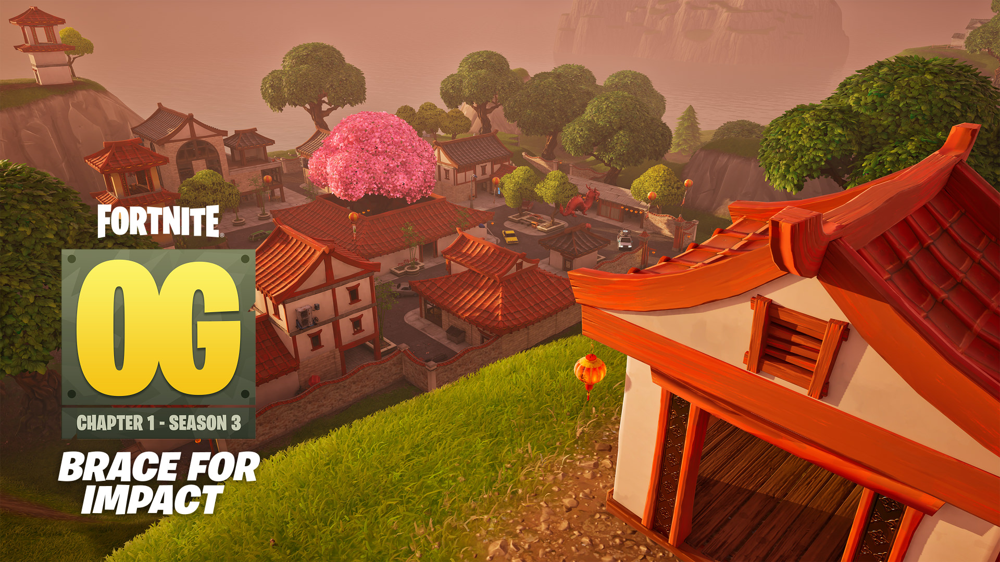

Você esta logado
Capitulo 1 Temporada 3 Raiz
Reviva a era… pera aí, o que é aquilo no céu? Fortnite Raiz chegou chegando no Capítulo 1: Temporada 3, completinho com a volta da Cidade da Sorte e um meteoro em rota de colisão perigosíssima! Ainda daquele tempo raiz, Está de volta! O tão pedido MTL: 50x50 faz o seu aguardado retorno com o 50x50 Raiz. São duas equipes de 50 pessoas se enfrentando para conquistar uma vitória épica, onde você vai viver a intensidade de uma batalha em grande escala enquanto luta, saqueia e constrói com 49 colegas de equipe!

Nova cidade
Essa cidadezinha é um tesouro em si por sua arquitetura ornamentada e saque em abundância. As ruas estreitas da Cidade são ótimas para duelos a curta distância, um verdadeiro campo
de batalha, mas cuidado pois oponentes podem se esconder atrás dessas gigantes arvores, e grandes casas, apenas os melhores
vencerão aqui!
mas não se esqueça de curtir as lindas cerejeiras enquanto saboreia sua vitória!

Novo passe
A nova Temporada Raiz traz o novo Passe Raiz, com 45 categorias de recompensas inspiradas no Capítulo 1: Temporada 3 clássico! Desbloqueie itens inspirados em Acorde Forte, Corvo e Rex — todos os Trajes lançados na Loja durante aquela Temporada.
Desbloqueie recompensas gratuitas e recompensas premium no Passe Raiz ganhando EXP em qualquer experiência do Fortnite. Para resgatar as recompensas premium conforme você ganha EXP, compre o Passe por apenas 1.000 V-Bucks ou obtenha-o pelo Clube Fortnite! Você terá acesso a três Trajes nas recompensas Premium do Passe.

Aviso - Este link irá redioreciona-lo para um site fora desta plataforma